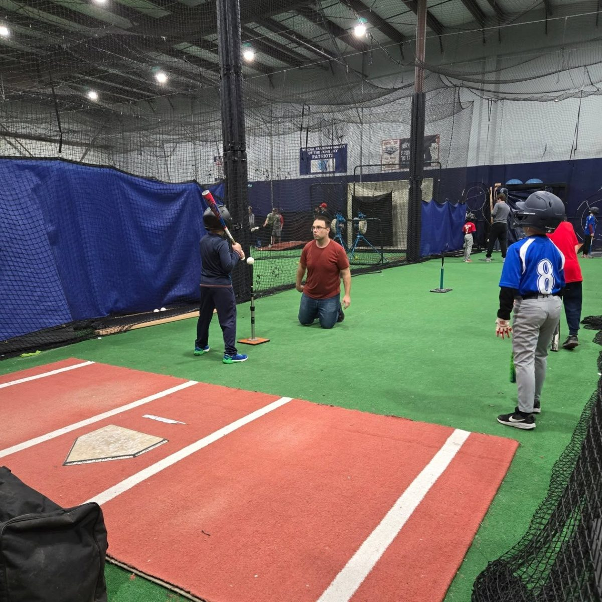
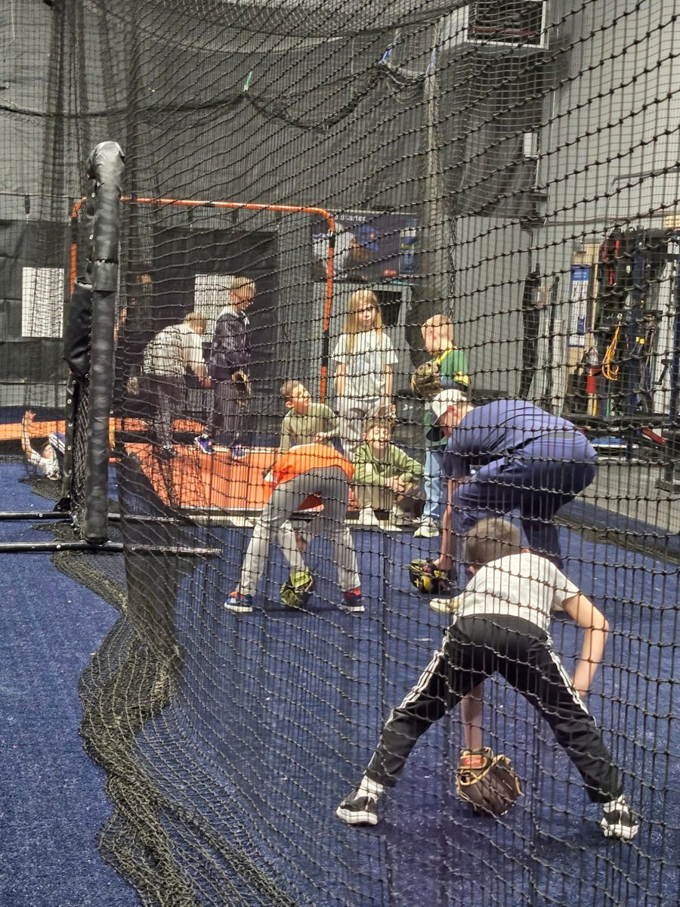
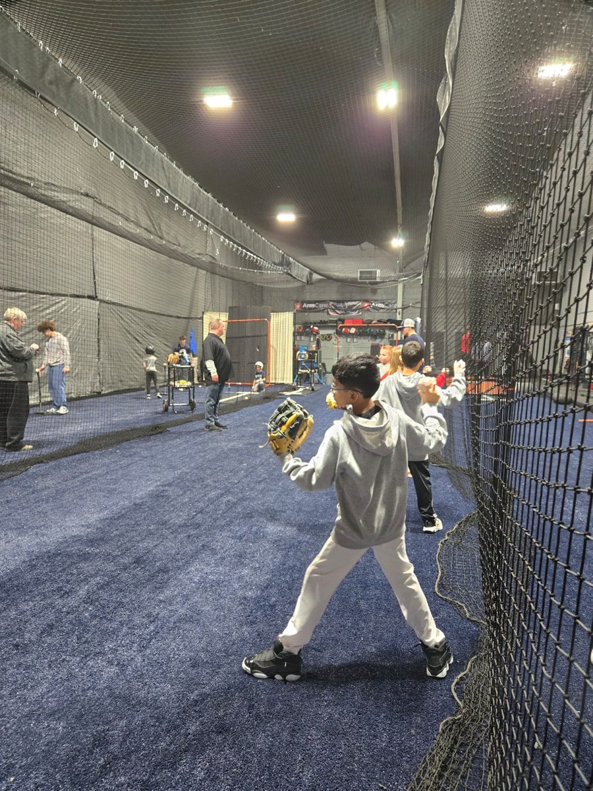
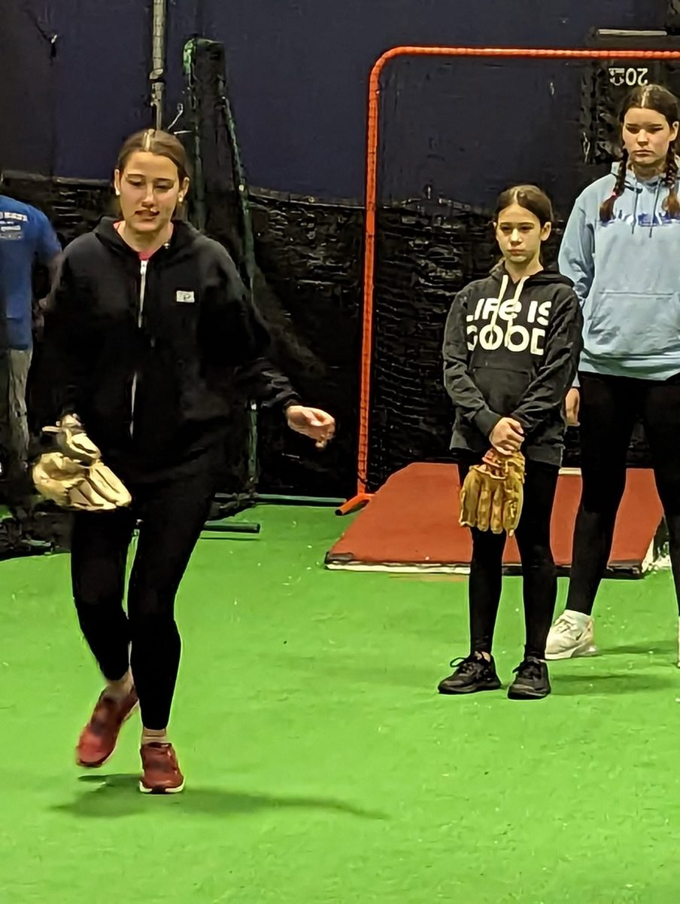

Clinic schedule
Winter clinic registration is open.
Clinics run from through . Each clinic costs $50. Players must be registered for Fishkill Little League’s Spring 2027 season to participate.
| Clinic | Time |
|---|---|
| Baseball 10U pitchers | 5–6 p.m. |
| Baseball 11+ catchers | 5–6 p.m. |
| Baseball 10U catchers | 6–7 p.m. |
| Baseball 11+ pitchers | 6–7 p.m. |
146 Old Route 9, Suite 4, Fishkill, NY 12524
| Clinic | Time |
|---|---|
| Softball | Noon–1 p.m. |
| Baseball 7U | 1–2 p.m. |
| Baseball 10U | 2–3 p.m. |
| Baseball Majors | 3–4:30 p.m. |
| Baseball Intermediate, Junior & Senior | 4:30–6 p.m. |
16 Wedgewood Road, Fishkill, NY 12524
Photos from past clinics


